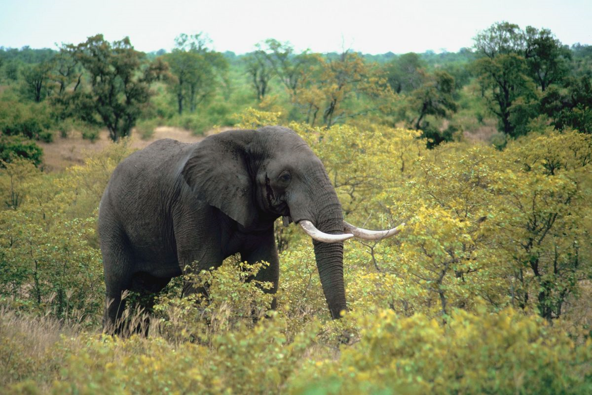
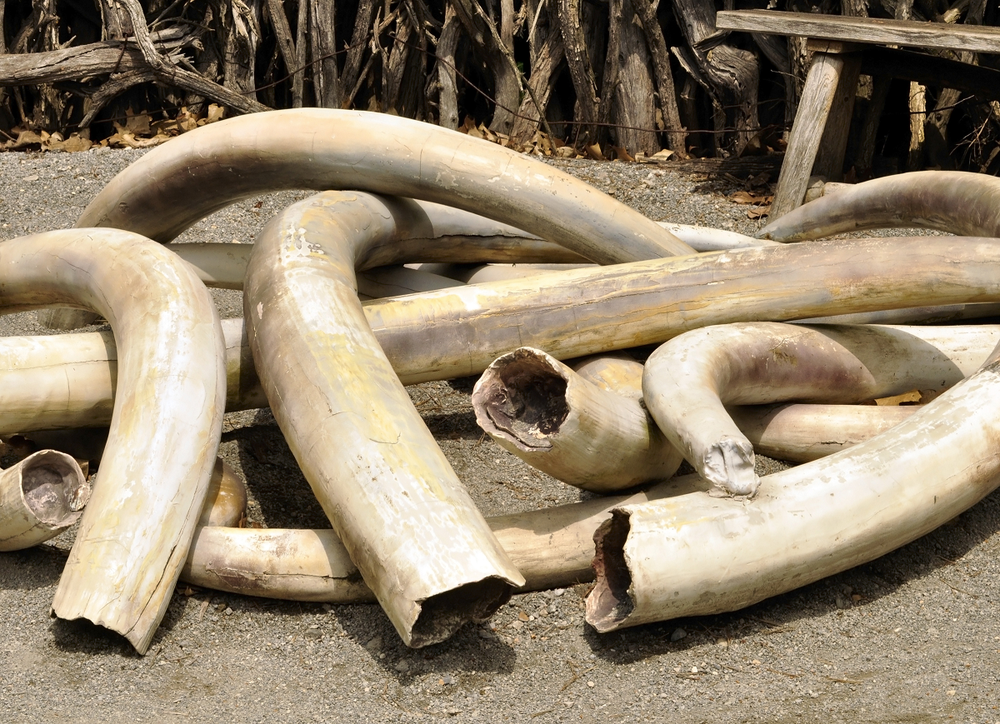
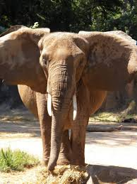

Why is This a Problem?
African elephants (Loxodonta africana), the largest land animals still in existence, are in trouble.
In late September, the African Elephant Status Report 2016 was released by the International Union for Conservation of Nature, which maintains the comprehensive IUCN Red List of Threatened Species. Included in its more than 300 pages was the disheartening news that for the first time in 25 years, the African Elephant population has declined across the continent of Africa.
Scientists estimate that over the past century the population of African elephants has dwindled by 95%. The current population is estimated to sit at 415,000, although researchers say it is possible that the number could be up to a third higher, because of the difficulty of conducting surveys in certain areas. The subspecies of elephant that dwells in the forest is particularly vulnerable thanks to habitat reduction and poaching combined with a low birth rate (these elephants tend not to reproduce for the first 20 years of their life and then only give birth once every five or six years, at a rate three times slower than their savannah-dwelling relatives). Their numbers have dropped by 60% since 2002; by comparison, the subspecies that resides on the savannah has lost a third of their population in the past seven years.
A way You Can Help
It may seem too distant for you to do anything . If you would like to make a difference donate here
  